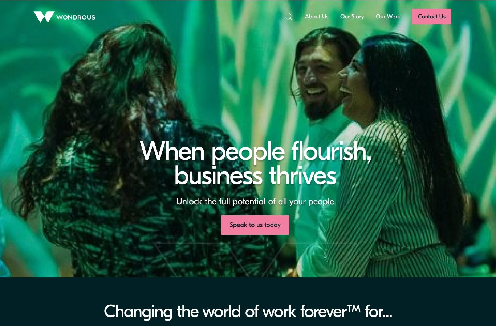
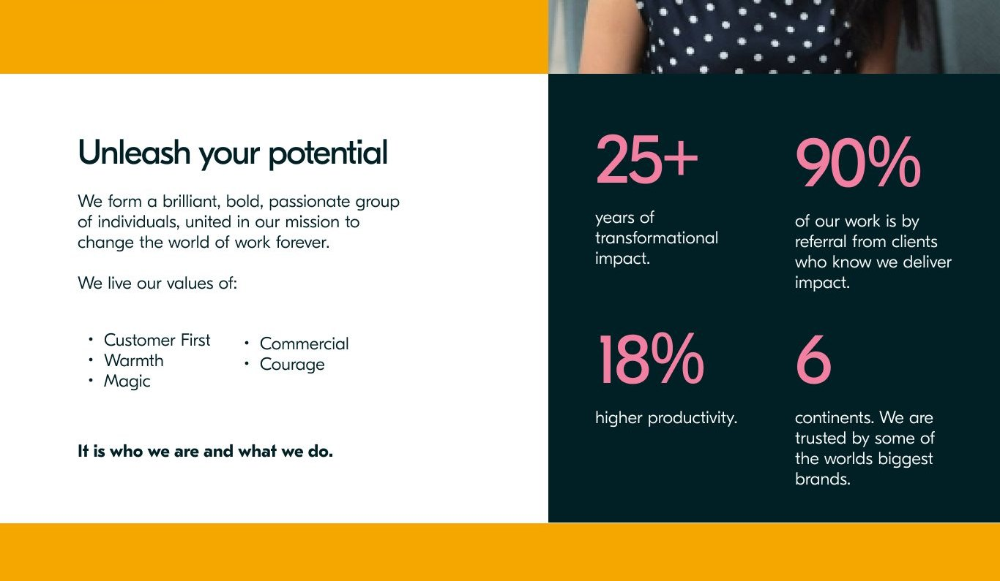
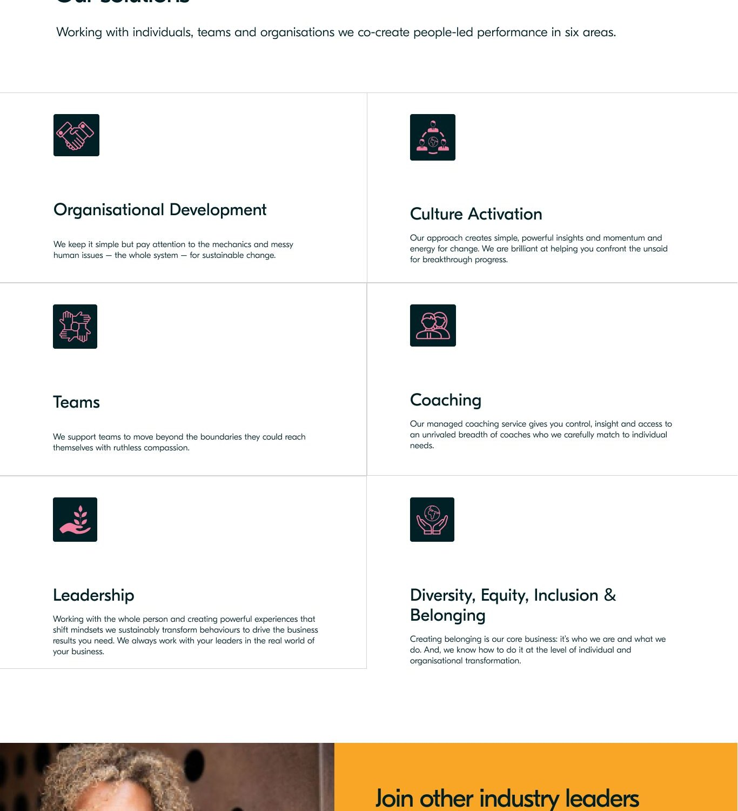
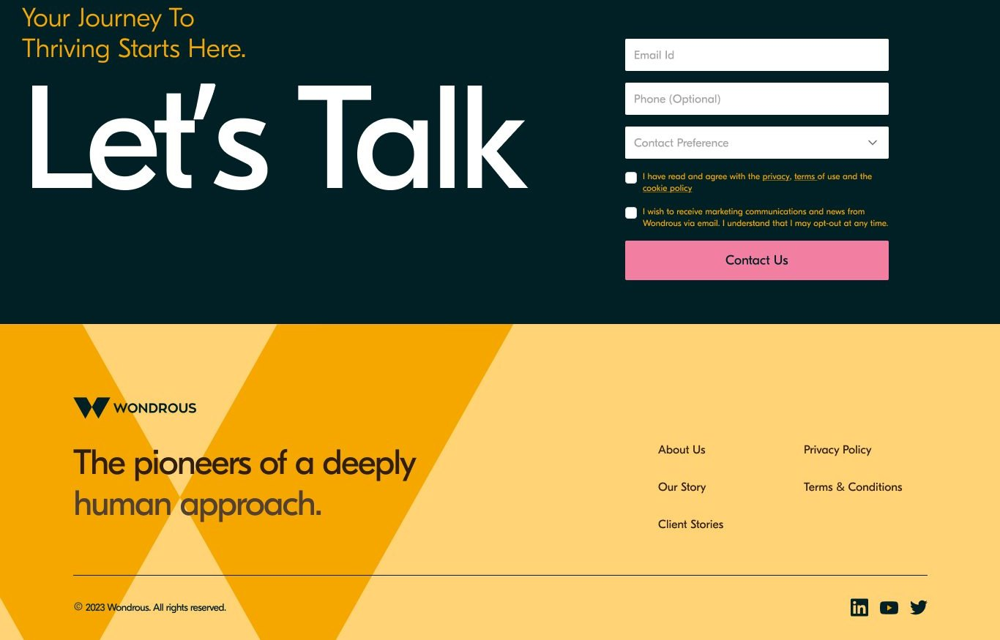
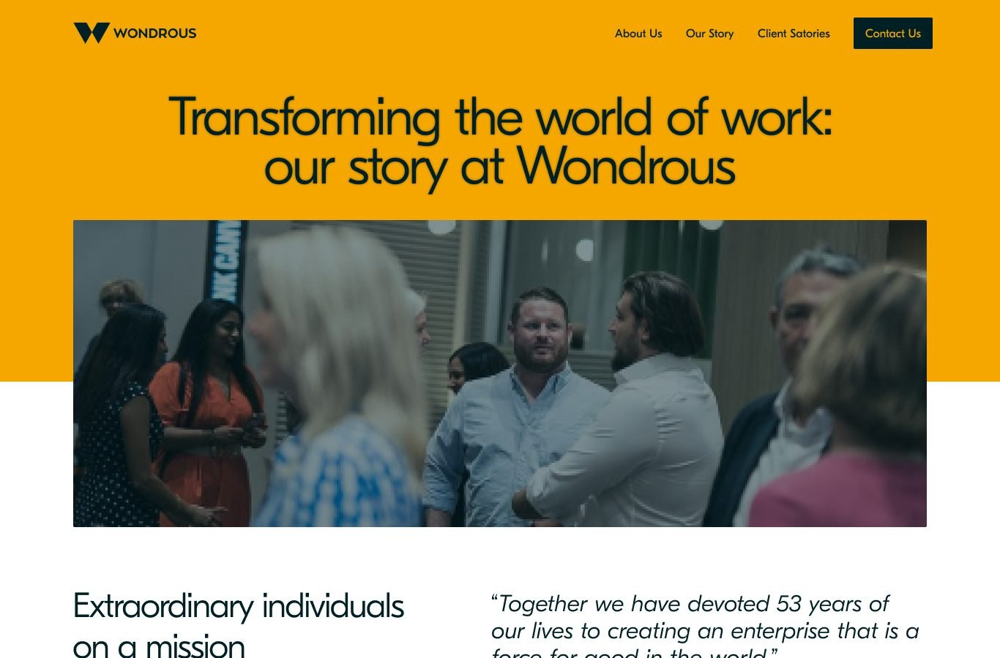
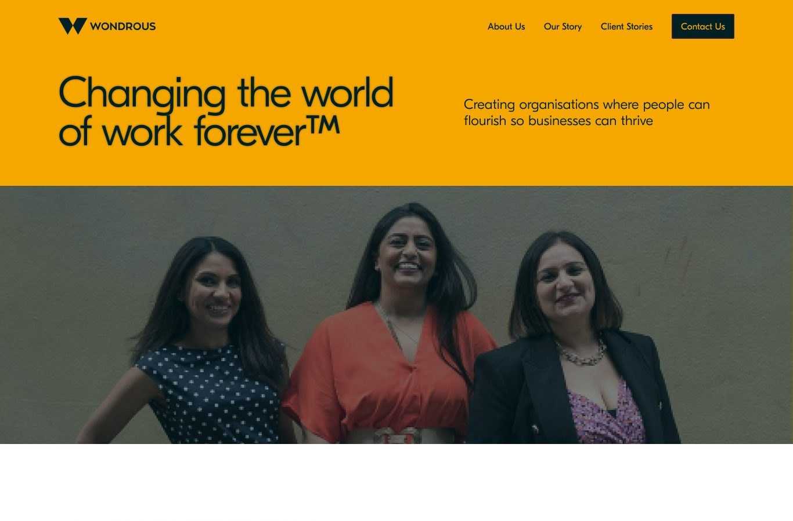
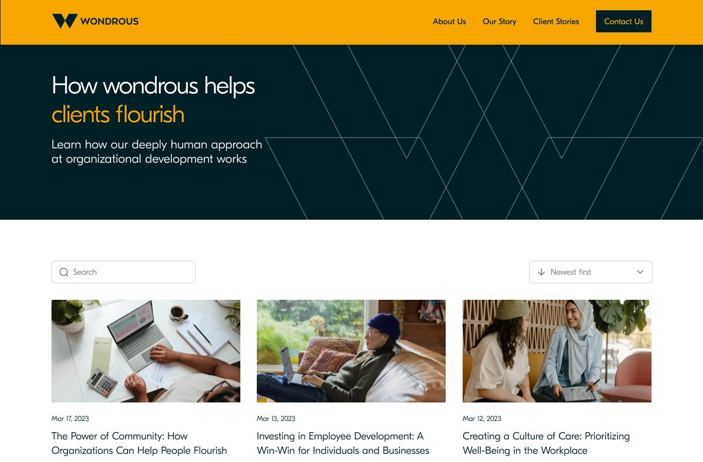

Wondrous
A people consultancy with real pedigree and a brand that had fallen behind the work. We found the structure inside how they think, the Wondrous lattice, and built the whole identity and website from it.
The brief
Serious work, an identity that had aged.
Wondrous works with organisations on culture, leadership and inclusion, the human side of how a business performs. The thinking sat ahead of the market. The brand did not. It read as generic where the work was distinctive, and there was no website strong enough to stand behind a first conversation. The task was an identity with the structure and warmth of the work, and a site to match.
The lattice
A framework you can see.
At the centre of the brand is the Wondrous lattice: the firm’s own framework for working with clients, drawn as a structure rather than written as a list. It holds many positions at once, each a place a piece of work can sit, and links them into a single connected system. That same lattice became the treatment for the whole identity, so the way Wondrous thinks and the way Wondrous looks are now one thing.
The mark
One reading of the lattice.
The W is the lattice resolved to a single mark. Two rising forms meet in the middle, cut from the same triangular cells the framework is built from, drawn at one weight so it holds as a logo and breaks back into the pattern when it needs to.

The colour
Warm, and grounded.
A single amber leads, the warmth that carries the two lines the brand lives by. A deep ink holds it, and a set of warm neutrals sits underneath to keep the identity human rather than corporate. It is a palette with confidence and no shout.
The treatment
The pattern, put to work.
The lattice is more than a logo lock-up. Outlined, filled or cropped to an edge, it becomes the pattern that runs across everything, a poster, a slide, a wall. It frames the photography and sets a rhythm that reads as Wondrous in a glance, while always leaving the image room to breathe.


A tool from the brand
The thinking, made usable.
The identity had to do more than look right. We turned one of the consultancy’s leadership models into a single working sheet, a guide to inclusive leadership that a client can read in a sitting and act on. The lattice, the palette and the voice all carry through, so the tool feels like part of the brand rather than a leaflet bolted on.

The website
A site built to carry it.
We designed and built the website around one idea: when people flourish, business thrives. Rounded cards soften the structure for a calmer read, amber leads the eye to the points that matter, and the lattice frames the photography. The homepage opens on the idea, then moves through the proof, the offer and the work.







The outcome
A brand built from how they think.
Wondrous came out of it with one idea running through everything: the lattice as framework, as mark, as pattern and as the structure of the site. A name made into a system, a palette with confidence behind it, and a website built to put it all to work. The brand now reads with the same structure and warmth as the consultancy itself.
Where does your brand sit against the business?
Every engagement starts with the Brand Alignment Diagnostic, a fixed first step that scores your brand against the business and shows what to fix first.